This revision exam covers Immunology, Minerals to Metals and Water Analysis.
Section A: Multiple choice (26 marks)
Immunology
Below is an image of 4 types of pathogen (bacteria, virus, prion and protozoan) that infect plants and animals. The approximate size of each is given by the scale bars. Use it for Questions 1 and 2.
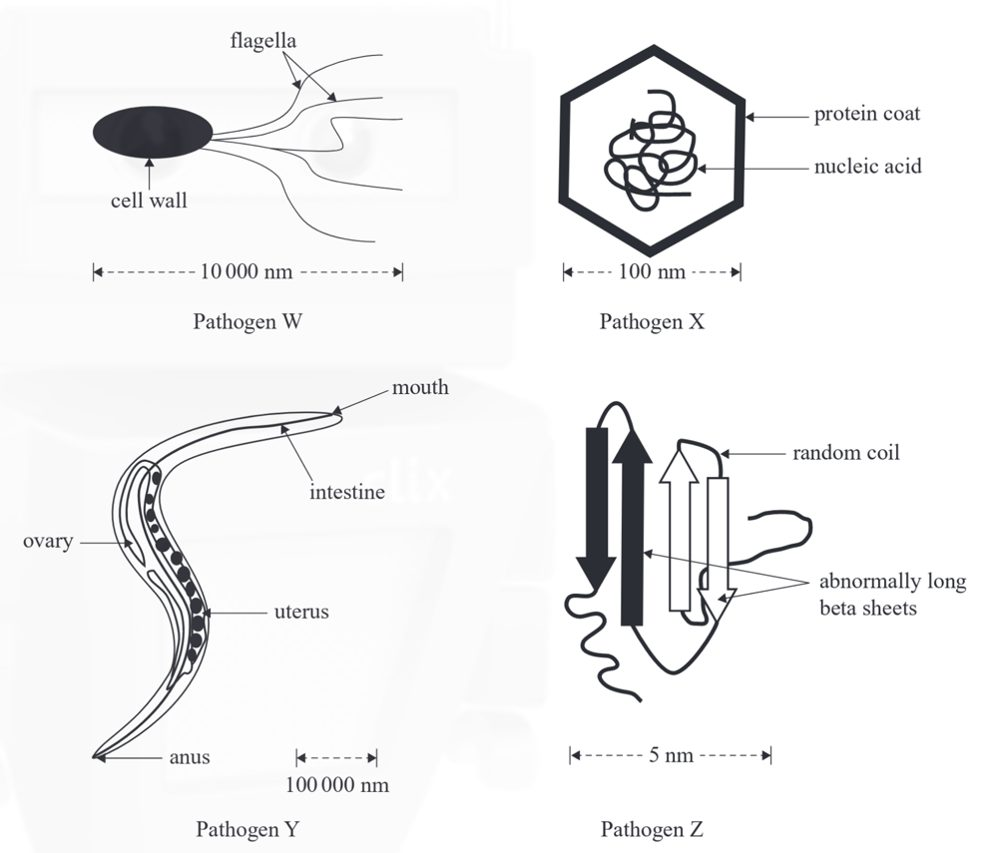
Which of the pathogens in the diagram are considered cellular (living)?
W (a bacterium) and Y (a multicellular parasite) are made of cells. X (a virus) and Z (a prion) are acellular.
Referring to the scales, which pathogen is the largest?
A microbiologist is given a sample from a patient with an unknown bacterial infection. Which plating technique would they use to isolate and then identify the bacteria?
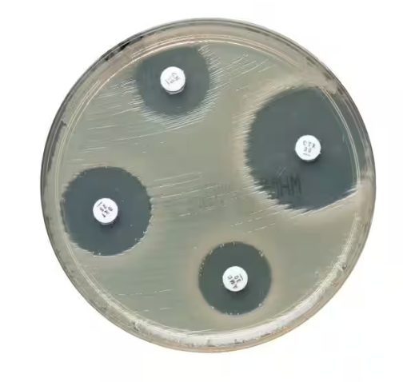
A lawn of E. coli was spread on an agar plate. Sterile discs were dipped into four different antibiotics and placed on the plate, which was incubated for 24 hours at 30 °C. The zones of inhibition are shown above. Which antibiotic is the most effective at treating an E. coli infection?
In 2015 the Zika virus spread rapidly across Brazil. With the Olympics in Rio the following year, there was much concern about spread across the world. The Zika virus causes Zika fever and is transmitted by the bite of a mosquito. Most sufferers show no symptoms, but the effect on the development of unborn babies can be catastrophic. From this information, it would be reasonable to state that
Which of the following statements about the first line of defence is correct?
The most common intestinal worms that infect Australians are threadworms (pinworms), a type of roundworm common in preschool and school-aged children, though the whole family can become infected. At night the worms lay their eggs at the opening of the anus, causing itchiness. The child scratches and carries the eggs to their mouth, toys and other things. Which mode(s) of transmission are described?
Use the following information for Questions 8 and 9.
At 12 months old, a child in Australia is vaccinated against measles, mumps and rubella. After a month the child is immune to these diseases.
What type of immunity would this give the child?
Immunity to these diseases comes from the third line of defence. Which statement about the third line of defence is true?
Minerals to Metals
The atomic number of an element is determined by
Magnesium atoms tend to ________ when they form compounds with non-metals.
In redox reactions,
H2SO4(aq) + 2NaOH(aq) → Na2SO4(aq) + 2H2O(l). This reaction can be described as
The first step in extracting copper from malachite ore is to break the ore into smaller pieces and add sulfuric acid. Breaking the ore into small pieces is important because it
Questions 15 and 16 refer to the following diagram.
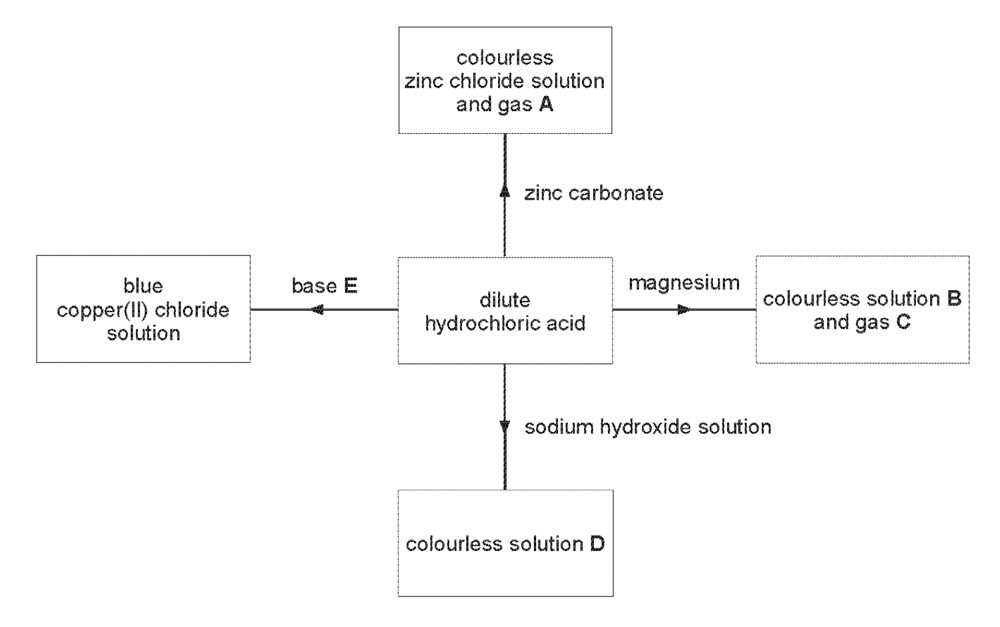
Gas A comes from dilute hydrochloric acid and zinc carbonate. The gas can be identified because
Gas A is carbon dioxide.
Base E is likely to be
Acid + metal oxide (a base) → salt + water: CuO + 2HCl → CuCl2 + H2O.
Questions 17 and 18 refer to the following graph of the melting point of tin–lead alloys (by mass).
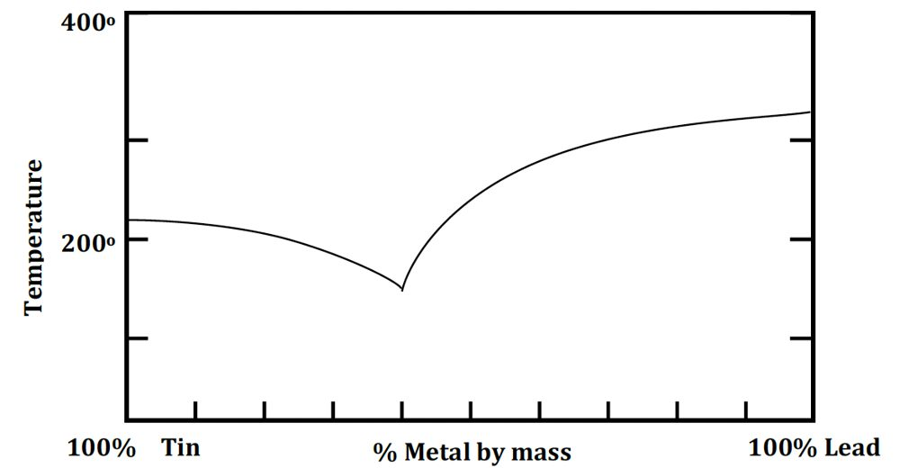
The alloy of tin and lead is called
The melting point of a tin–lead alloy of 60% lead and 40% tin is closest to
Water Analysis
When sulfuric acid reacts with potassium carbonate, the aqueous salt solution formed is
Which of the following is not a property of an acidic substance?
Water is a "universal solvent". This property is due to
Jenny did a titration using HCl to neutralise the bases in different cleaners. Her results:
| Cleaner | Volume of cleaner | Volume of concentrated HCl needed |
|---|---|---|
| A | 10 mL | 45 mL |
| B | 2 mL | 10 mL |
| C | 10 mL | 5 mL |
| D | 1 mL | 4 mL |
The least concentrated base is
Cleaner C needed only 0.5 mL of acid per mL of cleaner; the others needed 4–5 mL per mL.
Which of the following statements is correct?
Which of the following best describes the behaviour of water?
Using the solubility rules, which substance would you expect to be insoluble in water?
Using the same rules, which compound would you expect to be soluble in water?
Section B: Short answer (53 marks)
Question 1 (1 mark)
The diagram shows the electron structure of an element; each × is an electron.
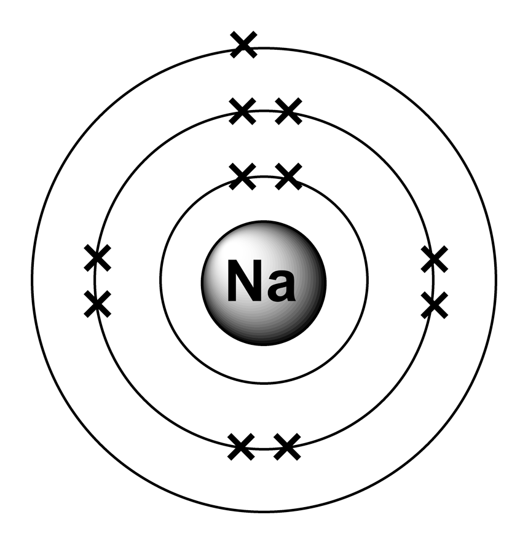
Describe (or draw on paper) a similar diagram for the element directly below it in the same group of the periodic table.
Potassium (K): a nucleus with four shells holding 2, 8, 8 and 1 electrons.
Question 2 (5 marks)
The diagram shows an outline of the periodic table. The letters are not the chemical symbols of the elements.
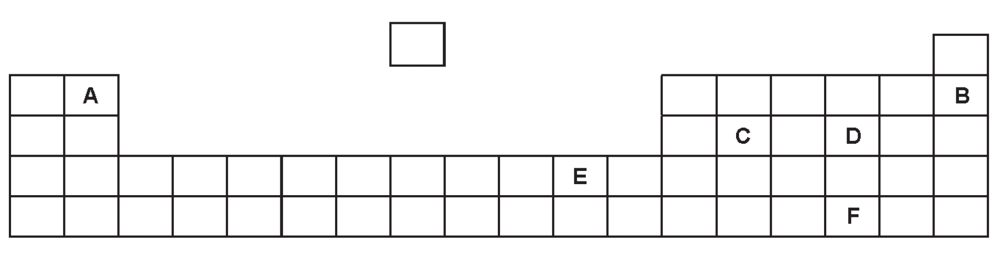
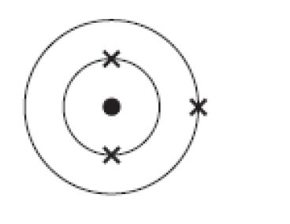
Give the letter(s) of the element(s) that fit each description.
- The noble gas:
- The two elements with the most similar chemical properties:
- The element with the electron structure shown above (2, 1):
- The malleable, ductile elements that are good conductors of heat and electricity:
- A brittle, shiny metalloid that is solid at room temperature:
Question 3 (5 marks)
The diagram represents the structure of copper.
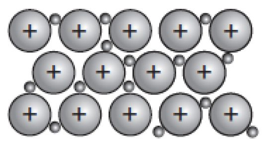
How does the structure of copper make it a good conductor of electricity?
It has free, delocalised electrons (1 mark), which can move through the lattice and carry charge (1 mark).
How does the structure of copper make it a highly ductile metal? Define ductile in your answer.
Ductile means it can be drawn into a wire. The metallic bonds are strong and non-directional (the ions are attracted to the sea of electrons in all directions) (1 mark), so layers of ions can slide past each other without the bonds breaking, allowing copper to be drawn into a wire (1 mark).
Explain why the structure of the alloy bronze makes it less ductile and malleable than pure copper.
Bronze contains metal ions of different sizes, which disrupt the regular lattice, so the layers can't slide past each other as easily.
Question 4 (6 marks)
Write balanced equations (states are not needed).
- Hydrochloric acid + calcium hydroxide solution: HCl + Ca(OH)2 → + H2O
- Sodium metal + water: Na + H2O → + H2
Complete the table. (Type formulas with ordinary numbers.)
| Name of acid or base | Formula |
|---|---|
| Sulfuric acid | |
| Phosphoric acid | |
| Nitric acid | |
| Ammonium hydroxide |
Use the solubility rules to predict whether each reaction forms a precipitate, and give its formula.
| Reactants | Precipitate? | Formula |
|---|---|---|
| MgCl2 + AgNO3 | ||
| CuSO4 + BaCl2 |
Question 5 (2 marks)
Refer to the solubility rules.
Considering solubility, explain why concentrated deposits of solid nitrate compounds are found only in desert regions.
All nitrates are soluble, so they dissolve and wash away wherever there is water; only in low-water (desert) environments can solid nitrate deposits remain.
Considering solubility, explain why the sea is a rich source of chloride, sulfate and sodium ions.
These ions form mostly soluble compounds, so they dissolve in rivers and accumulate in sea water.
Question 6 (3 marks)
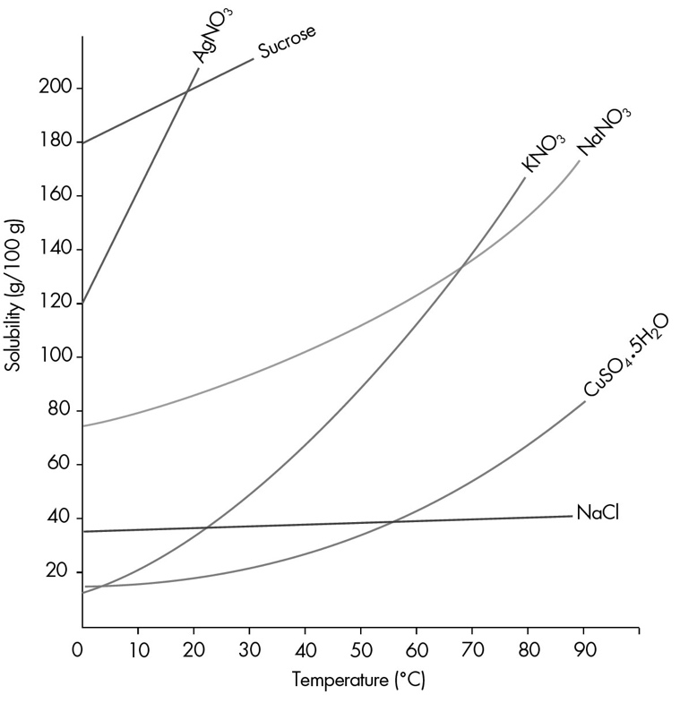
What mass of copper sulfate pentahydrate (CuSO4·5H2O) will dissolve in 100 g of water at 40 °C?
What mass of NaNO3 will dissolve in 200 g of water at 30 °C?
About 90 g dissolves in 100 g of water at 30 °C, so 180 g dissolves in 200 g.
At 50 °C, describe a KNO3 solution whose concentration is:
on the curve: ; below the curve: ; above the curve:
Question 7 (3 marks)
Use these tables to answer the question.
| Metal | Colour in Bunsen flame |
|---|---|
| Sodium | yellow/orange |
| Potassium | lilac |
| Lithium | reddish |
| Copper | green |
| Barium | apple green |
| Cation | Test with NaOH: colour of precipitate |
|---|---|
| Cu2+ | light blue |
| Fe2+ | olive green |
| Ba2+ | white |
| Fe3+ | orange |
| Li+, Na+, K+ | no precipitate |
| NH4+ | no precipitate |
| Anion | Test with Ag+ | Test with Ba2+ |
|---|---|---|
| Cl− | white | nil |
| Br− | cream | nil |
| I− | yellow precipitate (also with Pb2+) | nil |
| SO42− | none | white |
A student wants to identify two solutions, A and B.
- Solution A gives a reddish flame. It gives no precipitate with NaOH. In the anion tests, it gives a yellow precipitate with Pb2+ but no precipitate with Ba2+.
- Solution B gives no flame colour. It gives no precipitate with NaOH, but a pungent smell is detected on heating and red litmus turns blue. In the anion tests, it gives no precipitate with Ag+ but a white precipitate with Ba2+.
| Compound | Cation | Anion | Formula |
|---|---|---|---|
| A | |||
| B |
Question 8 (9 marks)
The human immune system has a series of defensive barriers. Bacteria that contact the body must get past these barriers to survive and cause infection.
Antiseptics and disinfectants are two chemicals that help stop the transmission of infectious diseases. What is the main difference in how they are used?
Antiseptics are milder and can be used on living tissue (skin); disinfectants are stronger and are used on non-living surfaces.
The first line of defence stops bacteria from entering the body. Give one example of
- a physical barrier:
ii. a chemical barrier:
Once bacteria have got in, they must overcome the second line of defence. Phagocytes (white blood cells) kill bacteria. Explain (with an annotated sketch on paper if you like) how phagocytes kill bacteria that have invaded the body.
The phagocyte surrounds the bacterium with pseudopods and engulfs it into a vesicle (1 mark). Enzymes (from lysosomes) are released into the vesicle and digest the bacterium (1 mark).
The third line of defence is specific and targets the invading bacteria. Describe the role of B cells in this line of defence.
B cells recognise the specific antigen on the bacteria and multiply into plasma cells, which produce specific antibodies that bind to the antigen and mark the bacteria for destruction (1 mark). Some become memory B cells, which give a faster response if the same bacteria invade again (1 mark).
Antibiotics are a treatment for bacterial infections. Could antibiotics be used to treat a viral infection? Explain.
No. Antibiotics specifically disrupt processes or structures found only in bacteria (1 mark), so they have no effect on viruses (1 mark).
Question 9 (6 marks)
Varicella (chickenpox) is a highly infectious disease caused by the varicella zoster virus. A live, attenuated vaccine is recommended for children at 18 months.
What type of immunity does this vaccine give 18-month-old children? immunity
Give 2 strategies that slow down or stop the transmission of chickenpox during an outbreak.
For example: vaccination; social distancing; isolating infected people.
For people aged 14 and over, 2 doses of the vaccine are recommended, 4 weeks apart. The graph shows the antibodies after the first dose.
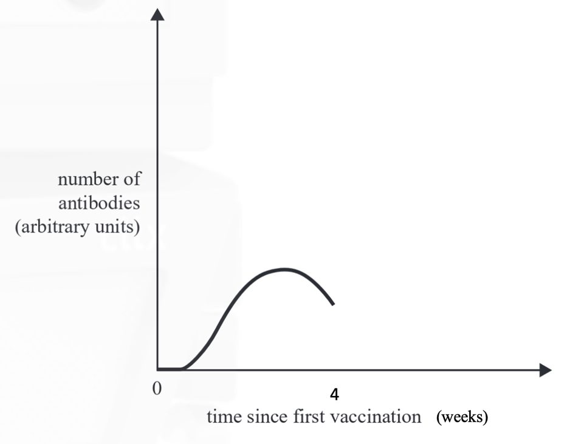
Describe (or sketch on paper) what happens to the number of antibodies in the blood after the second dose at week 4.
After the second dose, antibodies rise faster and to a much higher peak than after the first dose (and stay high for longer), because memory cells respond quickly.
What is the benefit of having 2 doses instead of 1? Justify your answer.
The second dose produces a stronger secondary response with more antibodies and more memory cells, so immunity is stronger and lasts longer (1 mark for the benefit, 1 mark for the justification).
Question 10 (7 marks)
A student was given tin, iron, copper and zinc, and solutions of their sulfates. Each metal sulfate solution was placed across a row of the four wells of a dropping tile, and each metal was placed in the four wells down a column.
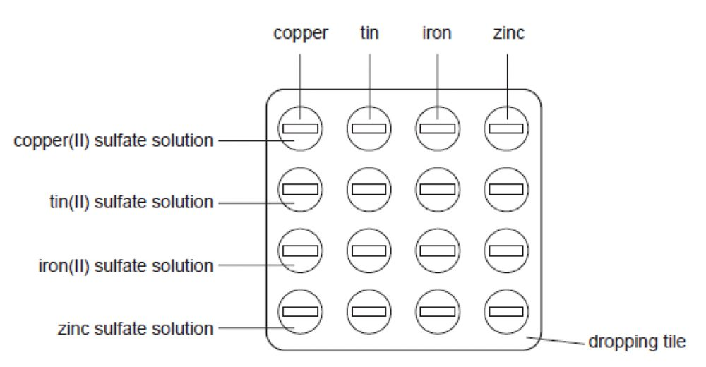
The student concluded that zinc is the most reactive of these metals, copper is the least reactive, and iron is more reactive than tin.
Complete the results: ✓ = a reaction, ✗ = no reaction.
| Copper | Tin | Iron | Zinc | |
|---|---|---|---|---|
| Copper(II) sulfate | ✗ | |||
| Tin(II) sulfate | ✗ | |||
| Iron(II) sulfate | ✗ | |||
| Zinc sulfate | ✗ |
A metal reacts only with the sulfate of a less reactive metal. The order is Zn > Fe > Sn > Cu.
Write a balanced equation, with states, for the reaction between zinc and tin(II) sulfate solution.
Zn(s) + SnSO4(aq) → +
For the reaction between zinc and tin(II) sulfate:
Which substance is oxidised?
Which substance is the reducing agent?
Which is the spectator ion?
Question 11 (6 marks)
The diagram shows apparatus used to obtain copper from copper(II) chloride solution.
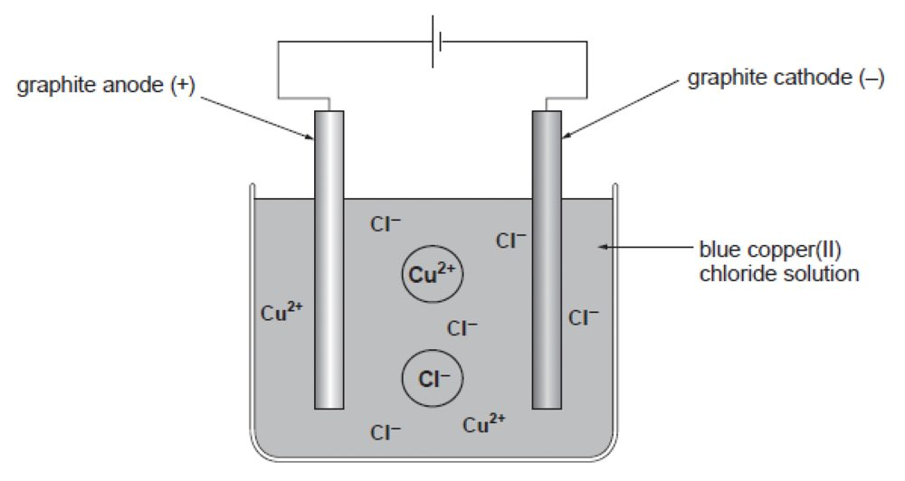
What is the term for separating copper chloride using an electric current?
Which way do the ions move when the apparatus is switched on?
Cu2+ ions move towards the ; Cl− ions move towards the .
Write the balanced half-equation for the reaction at the cathode: Cu2+(aq) + e− → (s)
Describe what, if anything, happens to the colour of the copper(II) chloride solution.
The blue colour fades over time, as Cu2+ ions are removed from the solution.
Identify the gas formed at the anode (from the ions that are oxidised there):
2Cl− → Cl2 + 2e−